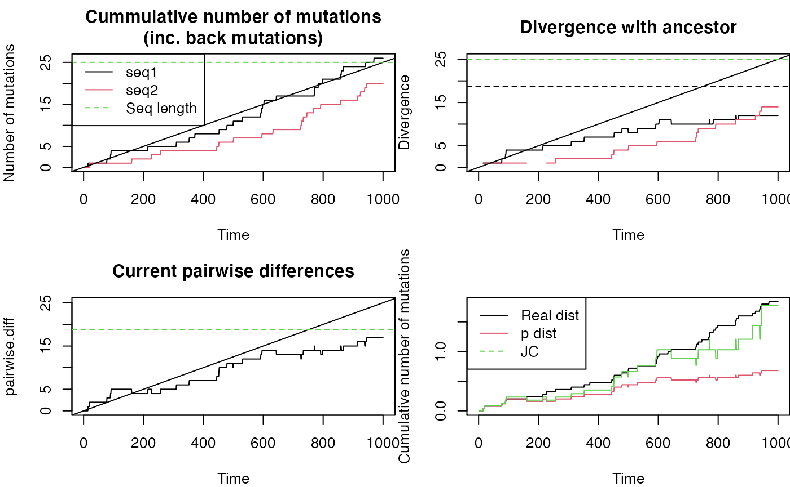

lll-jc_sim_for_render.Rmd
library(compbio4all)Human cytochrome C
https://www.ncbi.nlm.nih.gov/gene/4512 https://www.ncbi.nlm.nih.gov/pmc/articles/PMC1698023/
cyo <- c([1564 chars quoted with '"'])Use regular expression gsub() to remove the newline character
cyo <- gsub("\\n","",cyo)Turn character string into vector using strsplit()
cyo.vect.temp <- strsplit(cyo,"")
cyo.vect <- unlist(cyo.vect.temp)
table(cyo.vect)
#> cyo.vect
#> A C G T
#> 419 463 250 410Compare formats
# original
is(cyo)
#> [1] "character" "vector" "data.frameRowLabels"
#> [4] "SuperClassMethod"
str(cyo)
#> chr "ATGTTCGCCGACCGTTGACTATTCTCTACAAACCACAAAGACATTGGAACACTATACCTATTATTCGGCGCATGAGCTGGAGTCCTAGGCACAGCTCTAAGCCTCCTTATT"| __truncated__
cyo[1]
#> [1] "ATGTTCGCCGACCGTTGACTATTCTCTACAAACCACAAAGACATTGGAACACTATACCTATTATTCGGCGCATGAGCTGGAGTCCTAGGCACAGCTCTAAGCCTCCTTATTCGAGCCGAGCTGGGCCAGCCAGGCAACCTTCTAGGTAACGACCACATCTACAACGTTATCGTCACAGCCCATGCATTTGTAATAATCTTCTTCATAGTAATACCCATCATAATCGGAGGCTTTGGCAACTGACTAGTTCCCCTAATAATCGGTGCCCCCGATATGGCGTTTCCCCGCATAAACAACATAAGCTTCTGACTCTTACCTCCCTCTCTCCTACTCCTGCTCGCATCTGCTATAGTGGAGGCCGGAGCAGGAACAGGTTGAACAGTCTACCCTCCCTTAGCAGGGAACTACTCCCACCCTGGAGCCTCCGTAGACCTAACCATCTTCTCCTTACACCTAGCAGGTGTCTCCTCTATCTTAGGGGCCATCAATTTCATCACAACAATTATCAATATAAAACCCCCTGCCATAACCCAATACCAAACGCCCCTCTTCGTCTGATCCGTCCTAATCACAGCAGTCCTACTTCTCCTATCTCTCCCAGTCCTAGCTGCTGGCATCACTATACTACTAACAGACCGCAACCTCAACACCACCTTCTTCGACCCCGCCGGAGGAGGAGACCCCATTCTATACCAACACCTATTCTGATTTTTCGGTCACCCTGAAGTTTATATTCTTATCCTACCAGGCTTCGGAATAATCTCCCATATTGTAACTTACTACTCCGGAAAAAAAGAACCATTTGGATACATAGGTATGGTCTGAGCTATGATATCAATTGGCTTCCTAGGGTTTATCGTGTGAGCACACCATATATTTACAGTAGGAATAGACGTAGACACACGAGCATATTTCACCTCCGCTACCATAATCATCGCTATCCCCACCGGCGTCAAAGTATTTAGCTGACTCGCCACACTCCACGGAAGCAATATGAAATGATCTGCTGCAGTGCTCTGAGCCCTAGGATTCATCTTTCTTTTCACCGTAGGTGGCCTGACTGGCATTGTATTAGCAAACTCATCACTAGACATCGTACTACACGACACGTACTACGTTGTAGCCCACTTCCACTATGTCCTATCAATAGGAGCTGTATTTGCCATCATAGGAGGCTTCATTCACTGATTTCCCCTATTCTCAGGCTACACCCTAGACCAAACCTACGCCAAAATCCATTTCACTATCATATTCATCGGCGTAAATCTAACTTTCTTCCCACAACACTTTCTCGGCCTATCCGGAATGCCCCGACGTTACTCGGACTACCCCGATGCATACACCACATGAAACATCCTATCATCTGTAGGCTCATTCATTTCTCTAACAGCAGTAATATTAATAATTTTCATGATTTGAGAAGCCTTCGCTTCGAAGCGAAAAGTCCTAATAGTAGAAGAACCCTCCATAAACCTGGAGTGACTATATGGATGCCCCCCACCCTACCACACATTCGAAGAACCCGTATACATAAAATCTAGA"
# after strin spli
is(cyo.vect.temp)
#> [1] "list" "vector"
str(cyo.vect.temp)
#> List of 1
#> $ : chr [1:1542] "A" "T" "G" "T" ...
cyo.vect.temp[1]
#> [[1]]
#> [1] "A" "T" "G" "T" "T" "C" "G" "C" "C" "G" "A" "C" "C" "G" "T" "T" "G" "A"
#> [19] "C" "T" "A" "T" "T" "C" "T" "C" "T" "A" "C" "A" "A" "A" "C" "C" "A" "C"
#> [37] "A" "A" "A" "G" "A" "C" "A" "T" "T" "G" "G" "A" "A" "C" "A" "C" "T" "A"
#> [55] "T" "A" "C" "C" "T" "A" "T" "T" "A" "T" "T" "C" "G" "G" "C" "G" "C" "A"
#> [73] "T" "G" "A" "G" "C" "T" "G" "G" "A" "G" "T" "C" "C" "T" "A" "G" "G" "C"
#> [91] "A" "C" "A" "G" "C" "T" "C" "T" "A" "A" "G" "C" "C" "T" "C" "C" "T" "T"
#> [109] "A" "T" "T" "C" "G" "A" "G" "C" "C" "G" "A" "G" "C" "T" "G" "G" "G" "C"
#> [127] "C" "A" "G" "C" "C" "A" "G" "G" "C" "A" "A" "C" "C" "T" "T" "C" "T" "A"
#> [145] "G" "G" "T" "A" "A" "C" "G" "A" "C" "C" "A" "C" "A" "T" "C" "T" "A" "C"
#> [163] "A" "A" "C" "G" "T" "T" "A" "T" "C" "G" "T" "C" "A" "C" "A" "G" "C" "C"
#> [181] "C" "A" "T" "G" "C" "A" "T" "T" "T" "G" "T" "A" "A" "T" "A" "A" "T" "C"
#> [199] "T" "T" "C" "T" "T" "C" "A" "T" "A" "G" "T" "A" "A" "T" "A" "C" "C" "C"
#> [217] "A" "T" "C" "A" "T" "A" "A" "T" "C" "G" "G" "A" "G" "G" "C" "T" "T" "T"
#> [235] "G" "G" "C" "A" "A" "C" "T" "G" "A" "C" "T" "A" "G" "T" "T" "C" "C" "C"
#> [253] "C" "T" "A" "A" "T" "A" "A" "T" "C" "G" "G" "T" "G" "C" "C" "C" "C" "C"
#> [271] "G" "A" "T" "A" "T" "G" "G" "C" "G" "T" "T" "T" "C" "C" "C" "C" "G" "C"
#> [289] "A" "T" "A" "A" "A" "C" "A" "A" "C" "A" "T" "A" "A" "G" "C" "T" "T" "C"
#> [307] "T" "G" "A" "C" "T" "C" "T" "T" "A" "C" "C" "T" "C" "C" "C" "T" "C" "T"
#> [325] "C" "T" "C" "C" "T" "A" "C" "T" "C" "C" "T" "G" "C" "T" "C" "G" "C" "A"
#> [343] "T" "C" "T" "G" "C" "T" "A" "T" "A" "G" "T" "G" "G" "A" "G" "G" "C" "C"
#> [361] "G" "G" "A" "G" "C" "A" "G" "G" "A" "A" "C" "A" "G" "G" "T" "T" "G" "A"
#> [379] "A" "C" "A" "G" "T" "C" "T" "A" "C" "C" "C" "T" "C" "C" "C" "T" "T" "A"
#> [397] "G" "C" "A" "G" "G" "G" "A" "A" "C" "T" "A" "C" "T" "C" "C" "C" "A" "C"
#> [415] "C" "C" "T" "G" "G" "A" "G" "C" "C" "T" "C" "C" "G" "T" "A" "G" "A" "C"
#> [433] "C" "T" "A" "A" "C" "C" "A" "T" "C" "T" "T" "C" "T" "C" "C" "T" "T" "A"
#> [451] "C" "A" "C" "C" "T" "A" "G" "C" "A" "G" "G" "T" "G" "T" "C" "T" "C" "C"
#> [469] "T" "C" "T" "A" "T" "C" "T" "T" "A" "G" "G" "G" "G" "C" "C" "A" "T" "C"
#> [487] "A" "A" "T" "T" "T" "C" "A" "T" "C" "A" "C" "A" "A" "C" "A" "A" "T" "T"
#> [505] "A" "T" "C" "A" "A" "T" "A" "T" "A" "A" "A" "A" "C" "C" "C" "C" "C" "T"
#> [523] "G" "C" "C" "A" "T" "A" "A" "C" "C" "C" "A" "A" "T" "A" "C" "C" "A" "A"
#> [541] "A" "C" "G" "C" "C" "C" "C" "T" "C" "T" "T" "C" "G" "T" "C" "T" "G" "A"
#> [559] "T" "C" "C" "G" "T" "C" "C" "T" "A" "A" "T" "C" "A" "C" "A" "G" "C" "A"
#> [577] "G" "T" "C" "C" "T" "A" "C" "T" "T" "C" "T" "C" "C" "T" "A" "T" "C" "T"
#> [595] "C" "T" "C" "C" "C" "A" "G" "T" "C" "C" "T" "A" "G" "C" "T" "G" "C" "T"
#> [613] "G" "G" "C" "A" "T" "C" "A" "C" "T" "A" "T" "A" "C" "T" "A" "C" "T" "A"
#> [631] "A" "C" "A" "G" "A" "C" "C" "G" "C" "A" "A" "C" "C" "T" "C" "A" "A" "C"
#> [649] "A" "C" "C" "A" "C" "C" "T" "T" "C" "T" "T" "C" "G" "A" "C" "C" "C" "C"
#> [667] "G" "C" "C" "G" "G" "A" "G" "G" "A" "G" "G" "A" "G" "A" "C" "C" "C" "C"
#> [685] "A" "T" "T" "C" "T" "A" "T" "A" "C" "C" "A" "A" "C" "A" "C" "C" "T" "A"
#> [703] "T" "T" "C" "T" "G" "A" "T" "T" "T" "T" "T" "C" "G" "G" "T" "C" "A" "C"
#> [721] "C" "C" "T" "G" "A" "A" "G" "T" "T" "T" "A" "T" "A" "T" "T" "C" "T" "T"
#> [739] "A" "T" "C" "C" "T" "A" "C" "C" "A" "G" "G" "C" "T" "T" "C" "G" "G" "A"
#> [757] "A" "T" "A" "A" "T" "C" "T" "C" "C" "C" "A" "T" "A" "T" "T" "G" "T" "A"
#> [775] "A" "C" "T" "T" "A" "C" "T" "A" "C" "T" "C" "C" "G" "G" "A" "A" "A" "A"
#> [793] "A" "A" "A" "G" "A" "A" "C" "C" "A" "T" "T" "T" "G" "G" "A" "T" "A" "C"
#> [811] "A" "T" "A" "G" "G" "T" "A" "T" "G" "G" "T" "C" "T" "G" "A" "G" "C" "T"
#> [829] "A" "T" "G" "A" "T" "A" "T" "C" "A" "A" "T" "T" "G" "G" "C" "T" "T" "C"
#> [847] "C" "T" "A" "G" "G" "G" "T" "T" "T" "A" "T" "C" "G" "T" "G" "T" "G" "A"
#> [865] "G" "C" "A" "C" "A" "C" "C" "A" "T" "A" "T" "A" "T" "T" "T" "A" "C" "A"
#> [883] "G" "T" "A" "G" "G" "A" "A" "T" "A" "G" "A" "C" "G" "T" "A" "G" "A" "C"
#> [901] "A" "C" "A" "C" "G" "A" "G" "C" "A" "T" "A" "T" "T" "T" "C" "A" "C" "C"
#> [919] "T" "C" "C" "G" "C" "T" "A" "C" "C" "A" "T" "A" "A" "T" "C" "A" "T" "C"
#> [937] "G" "C" "T" "A" "T" "C" "C" "C" "C" "A" "C" "C" "G" "G" "C" "G" "T" "C"
#> [955] "A" "A" "A" "G" "T" "A" "T" "T" "T" "A" "G" "C" "T" "G" "A" "C" "T" "C"
#> [973] "G" "C" "C" "A" "C" "A" "C" "T" "C" "C" "A" "C" "G" "G" "A" "A" "G" "C"
#> [991] "A" "A" "T" "A" "T" "G" "A" "A" "A" "T" "G" "A" "T" "C" "T" "G" "C" "T"
#> [1009] "G" "C" "A" "G" "T" "G" "C" "T" "C" "T" "G" "A" "G" "C" "C" "C" "T" "A"
#> [1027] "G" "G" "A" "T" "T" "C" "A" "T" "C" "T" "T" "T" "C" "T" "T" "T" "T" "C"
#> [1045] "A" "C" "C" "G" "T" "A" "G" "G" "T" "G" "G" "C" "C" "T" "G" "A" "C" "T"
#> [1063] "G" "G" "C" "A" "T" "T" "G" "T" "A" "T" "T" "A" "G" "C" "A" "A" "A" "C"
#> [1081] "T" "C" "A" "T" "C" "A" "C" "T" "A" "G" "A" "C" "A" "T" "C" "G" "T" "A"
#> [1099] "C" "T" "A" "C" "A" "C" "G" "A" "C" "A" "C" "G" "T" "A" "C" "T" "A" "C"
#> [1117] "G" "T" "T" "G" "T" "A" "G" "C" "C" "C" "A" "C" "T" "T" "C" "C" "A" "C"
#> [1135] "T" "A" "T" "G" "T" "C" "C" "T" "A" "T" "C" "A" "A" "T" "A" "G" "G" "A"
#> [1153] "G" "C" "T" "G" "T" "A" "T" "T" "T" "G" "C" "C" "A" "T" "C" "A" "T" "A"
#> [1171] "G" "G" "A" "G" "G" "C" "T" "T" "C" "A" "T" "T" "C" "A" "C" "T" "G" "A"
#> [1189] "T" "T" "T" "C" "C" "C" "C" "T" "A" "T" "T" "C" "T" "C" "A" "G" "G" "C"
#> [1207] "T" "A" "C" "A" "C" "C" "C" "T" "A" "G" "A" "C" "C" "A" "A" "A" "C" "C"
#> [1225] "T" "A" "C" "G" "C" "C" "A" "A" "A" "A" "T" "C" "C" "A" "T" "T" "T" "C"
#> [1243] "A" "C" "T" "A" "T" "C" "A" "T" "A" "T" "T" "C" "A" "T" "C" "G" "G" "C"
#> [1261] "G" "T" "A" "A" "A" "T" "C" "T" "A" "A" "C" "T" "T" "T" "C" "T" "T" "C"
#> [1279] "C" "C" "A" "C" "A" "A" "C" "A" "C" "T" "T" "T" "C" "T" "C" "G" "G" "C"
#> [1297] "C" "T" "A" "T" "C" "C" "G" "G" "A" "A" "T" "G" "C" "C" "C" "C" "G" "A"
#> [1315] "C" "G" "T" "T" "A" "C" "T" "C" "G" "G" "A" "C" "T" "A" "C" "C" "C" "C"
#> [1333] "G" "A" "T" "G" "C" "A" "T" "A" "C" "A" "C" "C" "A" "C" "A" "T" "G" "A"
#> [1351] "A" "A" "C" "A" "T" "C" "C" "T" "A" "T" "C" "A" "T" "C" "T" "G" "T" "A"
#> [1369] "G" "G" "C" "T" "C" "A" "T" "T" "C" "A" "T" "T" "T" "C" "T" "C" "T" "A"
#> [1387] "A" "C" "A" "G" "C" "A" "G" "T" "A" "A" "T" "A" "T" "T" "A" "A" "T" "A"
#> [1405] "A" "T" "T" "T" "T" "C" "A" "T" "G" "A" "T" "T" "T" "G" "A" "G" "A" "A"
#> [1423] "G" "C" "C" "T" "T" "C" "G" "C" "T" "T" "C" "G" "A" "A" "G" "C" "G" "A"
#> [1441] "A" "A" "A" "G" "T" "C" "C" "T" "A" "A" "T" "A" "G" "T" "A" "G" "A" "A"
#> [1459] "G" "A" "A" "C" "C" "C" "T" "C" "C" "A" "T" "A" "A" "A" "C" "C" "T" "G"
#> [1477] "G" "A" "G" "T" "G" "A" "C" "T" "A" "T" "A" "T" "G" "G" "A" "T" "G" "C"
#> [1495] "C" "C" "C" "C" "C" "A" "C" "C" "C" "T" "A" "C" "C" "A" "C" "A" "C" "A"
#> [1513] "T" "T" "C" "G" "A" "A" "G" "A" "A" "C" "C" "C" "G" "T" "A" "T" "A" "C"
#> [1531] "A" "T" "A" "A" "A" "A" "T" "C" "T" "A" "G" "A"
#final
is(cyo.vect)
#> [1] "character" "vector" "data.frameRowLabels"
#> [4] "SuperClassMethod"
str(cyo.vect)
#> chr [1:1542] "A" "T" "G" "T" "T" "C" "G" "C" "C" "G" "A" "C" "C" "G" "T" ...
cyo.vect[1]
#> [1] "A"
cyo.vect[1:10]
#> [1] "A" "T" "G" "T" "T" "C" "G" "C" "C" "G"Function to mutate a single base
Function has 3 arguments
This will take on different values as we cycle through a sequence. It has a default but normally will change as a loop progresses through a sequence.
This could be set to amino acid
These have really high default values for illustration purposes.
mutate_position <- function(original = "A",
possible = c("A","T","C","G"),
probs = c(1/3, 1/3, 1/3)){
# First, if "original"is an NA, throw an erro
if(is.na(original) == TRUE){
warning("Thing to mutate is not listed in possible nucleotides or amino acids. Check the data")
print(original)
browser()
}
# determine what the current thing to mutate is
i.original <- which(possible == original)
# remove the current status from the possible mutations
possible.working <- possible[-i.original]
# assign a new base
new.base <- sample(x = possible.working,
size = 1,
prob = probs)
return(new.base)
}Test the function
mutate_position()
mutate_position(original = "A")
mutate_position(original = "T")
mutate_position(original = "C")
mutate_position(original = "G")
mutate_position(original = "")This calls the function mutation_position()
mutate_sequence <- function(u = 2e-01,
seq.t1 = cyo.vect){
# length of sequence
seq.len <- length(seq.t1)
# create copy of seq to make changes to
seq.t2 <- seq.t1
# counter of total muatations
tot.mutations <- 0
# generate locations of mutations
## for each position, generate 0 or 1, with probablity of 1 = u
## returns a vector with 0 or 1 for each position
mutated.positions <- rbinom(n = seq.len, # number of positions
size = 1,
prob = u)
# apply mutations
if(any(mutated.positions) == 1){
mutation.locations <- which(mutated.positions == 1)
for(j in mutation.locations){
base.j <- seq.t1[j]
if(is.na(base.j) == TRUE){
browser()
}
if(is.character(base.j) == FALSE){
browser()
}
new.base.j <- mutate_position(original = base.j)
seq.t2[j] <- new.base.j
# determine the total number of
tot.mutations <- sum(mutated.positions)
}
}
# output
output <- list(tot.mutations = tot.mutations,
seq.t1 = seq.t1,
seq.t2 = seq.t2 )
return(output)
}
Test the function
cyo.vect.short <- cyo.vect[1:25]
mutate_sequence(u = 0.05,seq.t1 = cyo.vect.short )
#> $tot.mutations
#> [1] 0
#>
#> $seq.t1
#> [1] "A" "T" "G" "T" "T" "C" "G" "C" "C" "G" "A" "C" "C" "G" "T" "T" "G" "A" "C"
#> [20] "T" "A" "T" "T" "C" "T"
#>
#> $seq.t2
#> [1] "A" "T" "G" "T" "T" "C" "G" "C" "C" "G" "A" "C" "C" "G" "T" "T" "G" "A" "C"
#> [20] "T" "A" "T" "T" "C" "T"
diverge_two_sequences <- function(seq1,
seq2,
u = 2e-03,
time = 1e4){
# create data storage dataframe
time.series <- data.frame(t = 1:time,
tot.mutations.s1 = NA,
tot.mutations.s2 = NA,
vis.mutations.s1 = NA,
vis.mutations.s2 = NA,
pairwise.diff = NA,
seq1 = NA,
seq2 = NA)
# Store starting sequences (not implemented)
# time.series[i, "seq1"] <- seq1
# time.series[i, "seq2"] <- seq2
# Save original sequence
seq1.orig <- seq1
seq2.orig <- seq2
# set initial njmber of mutations to 0
time.series[1,c("tot.mutations.s1","tot.mutations.s2")] <- 0
time.series[1,c("vis.mutations.s1","vis.mutations.s2")] <- 0
for(i in 2:time){
# print(i)
#mutate sequence 1
## run mutation function
### This function 1) mutates an input sequence
### 2) compares mutated to input sequence
### 3) determines number of differences beteween
### input and mutated sequence
seq1.output.i <- mutate_sequence(u = u,
seq.t1 = seq1)
#mutate sequence 2
seq2.output.i <- mutate_sequence(u = u,
seq.t1 = seq2)
#determine cumulative number of mutations
## add up previous total of mutations to number that occurred
## during this time step.
## This will include any back mutations since number of mutations
## is determined by compareing input vs. output sequence of seq1.output.x
## This is the TRUE genetic distance - ALL mutations of ANY kind
time.series[i, "tot.mutations.s1"]<- time.series[i-1, "tot.mutations.s1"] +
seq1.output.i$tot.mutations[1]
time.series[i, "tot.mutations.s2"]<- time.series[i-1, "tot.mutations.s2"] +
seq2.output.i$tot.mutations[1]
# time.series[i+1, "seq1"] <- seq1.output.i$seq.t2[1]
# time.series[i+1, "seq2"] <- seq2.output.i$seq.t2[1]
# Divergence from original sequence
## Determine where in current sequence there are differrences
## with the original sequence
seq1.delta <- which(seq1.orig !=
seq1.output.i$seq.t2)
seq2.delta <- which(seq2.orig !=
seq2.output.i$seq.t2)
# Count up number of differences with lenght()
## This is ONLY differeneces we'd see if we had access to the ancestral sequence
## A->T->A over 3 times steps = 0 mutations.
if(any(seq1.delta > 0) == TRUE){
time.series[i,c("vis.mutations.s1")] <- length(seq1.delta)
}
if(any(seq2.delta > 0) == TRUE){
time.series[i,c("vis.mutations.s2")] <- length(seq2.delta)
}
seq1 <- seq1.output.i$seq.t2
seq2 <- seq2.output.i$seq.t2
pairwise.diff <- which(seq1.output.i$seq.t2!=
seq2.output.i$seq.t2)
time.series$pairwise.diff[i] <- length(pairwise.diff)
}
return(time.series)
}
seq.length <- 25
cyo.vect.short <- cyo.vect[1:seq.length]
years <- 1000
x <- diverge_two_sequences(seq1 = cyo.vect.short,
seq2 = cyo.vect.short,
u = 0.001,
time = years)
### Plot Cumulative number of mutations
par(mfrow = c(2,2),
mar = c(4,4,3,0))
plot(tot.mutations.s1 ~ t, data = x, type = "l",
#ylim = c(0, seq.length*1.01),
main = "Cummulative number of mutations\n(inc. back mutations)",
xlab = "Time",
ylab = "Number of mutations")
points(tot.mutations.s2 ~ t, data = x, col = 2, type = "l")
abline(a = 0, b = 0.001*25)
abline(h = 25, lty = 2, col = 3)
legend("topleft",legend = c("seq1","seq2","Seq length"), lty = c(1,1,2), col = c(1,2,3))
### Divergence with ancestor
#If we could at least compare with the ancestral sequence.
# Divergence with ancestor can **decrease** due to **back mutations**
plot(vis.mutations.s1 ~ t, data = x, type = "l",
ylim = c(0, seq.length*1.01),
main = "Divergence with ancestor",
xlab = "Time",
ylab = "Divergence")
points(vis.mutations.s2 ~ t, data = x, col = 2, type = "l")
abline(a = 0, b = 0.001*25)
abline(h = 25, lty = 2, col = 3)
abline(h = 25*0.75, lty = 2, col = 1)
### Pairwise differences
plot(pairwise.diff ~ t, data = x, type = "l",
ylim = c(0, seq.length*1.01),
main = "Current pairwise differences",
xlab = "Time",
ylab = "pairwise.diff",
lty = 1)
abline(a = 0, b = 0.001*25)
abline(h = 25*0.75, lty = 2, col = 3)
### Jukes Cantor Model
## JC distance function
jc <- function(p){
K <- -3/4 * log(1 - 4/3*p)
return(K)
}
##Add JC to plot
x$p <- x$pairwise.diff/seq.length
x$JC <- jc(x$p)
x$JC.total <- x$JC*seq.length
x$distance.total <- x$tot.mutations.s1 + x$tot.mutations.s2
plot(distance.total/25 ~ t, data = x, type = "l",
# ylim = c(0, seq.length*1.01),
# main = "Cummulative number of mutations\n(inc. back mutations)",
xlab = "Time",
ylab = "Cumulative number of mutations"#,
# ylim = c(0,3)
)
points(p ~ t, data = x, col = 2, type = "l")
points(JC ~ t, data = x, col = 3, type = "l")
legend("topleft",legend = c("Real dist","p dist","JC"), lty = c(1,1,2), col = c(1,2,3))